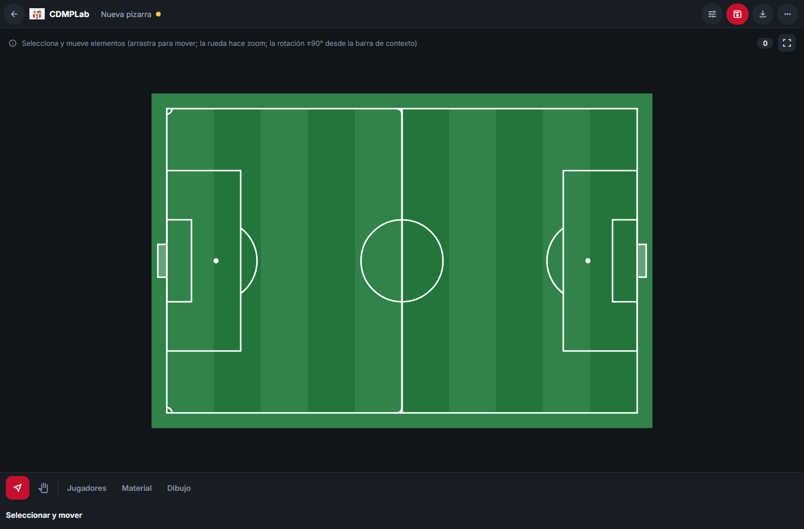
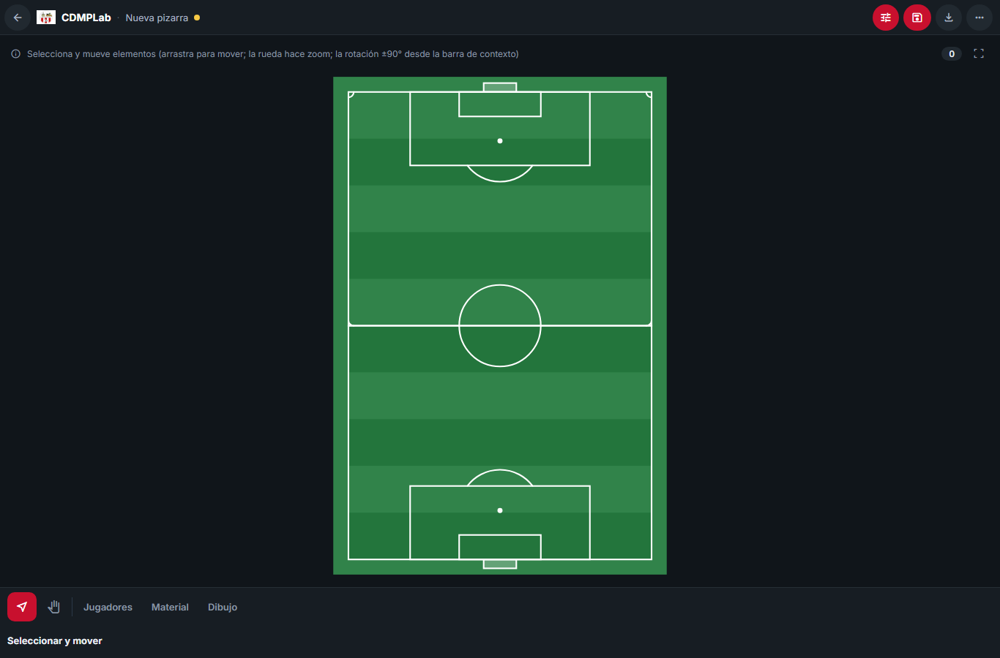
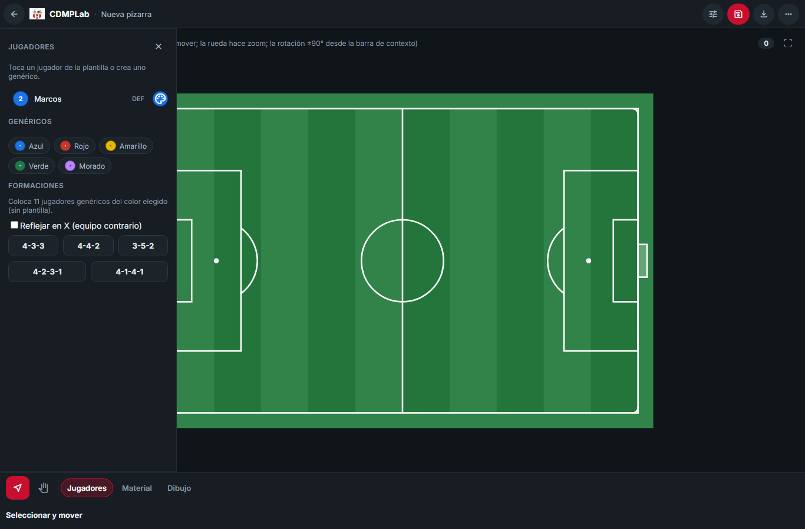
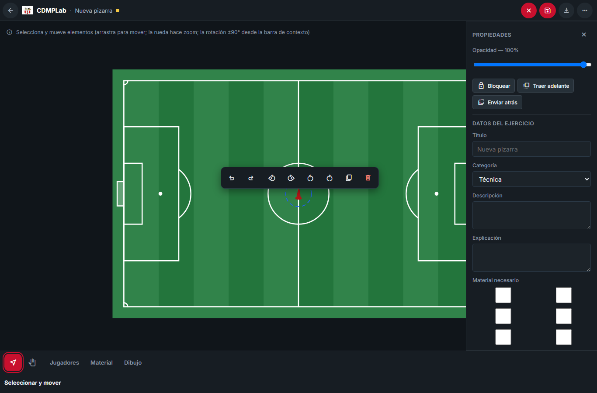
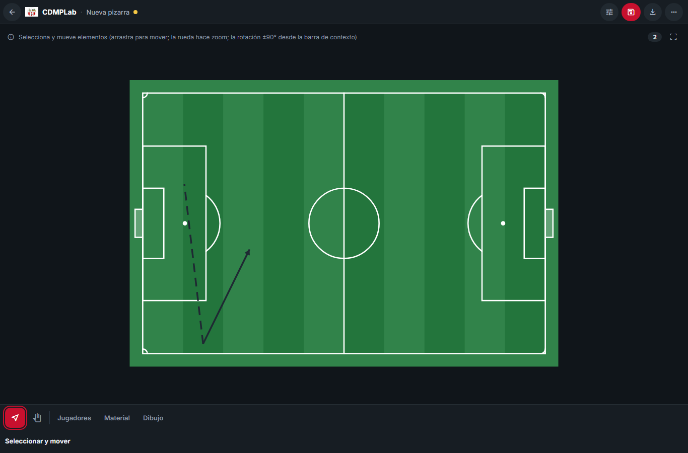
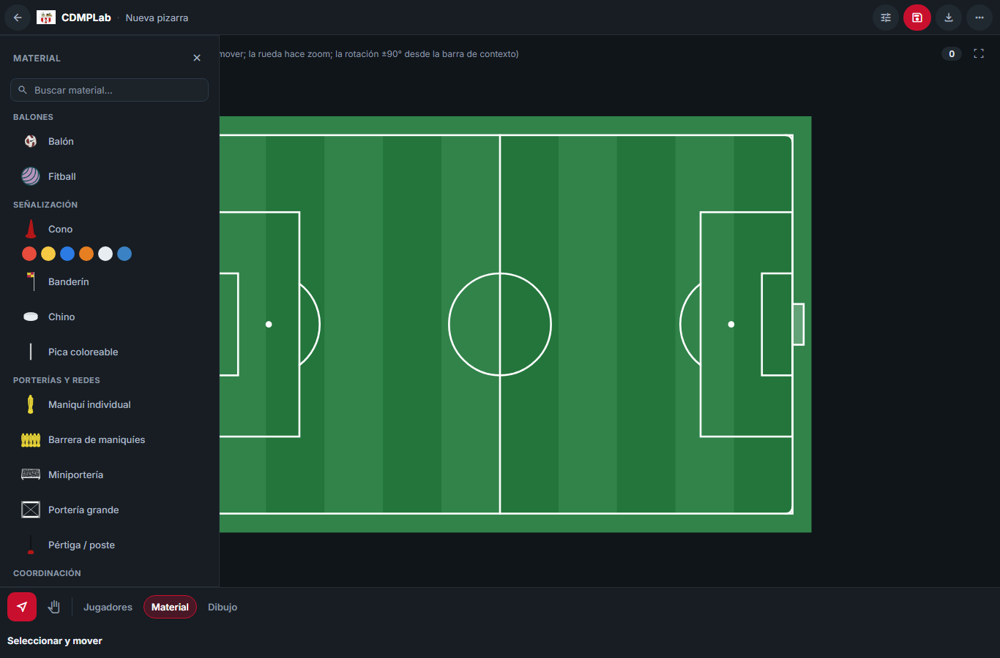
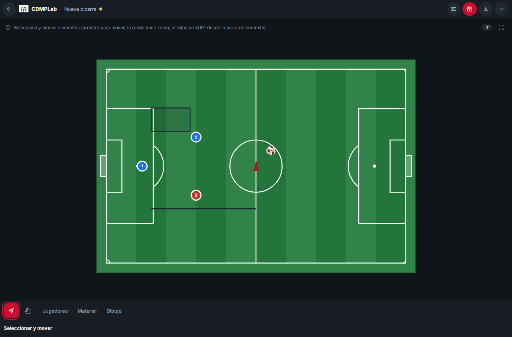
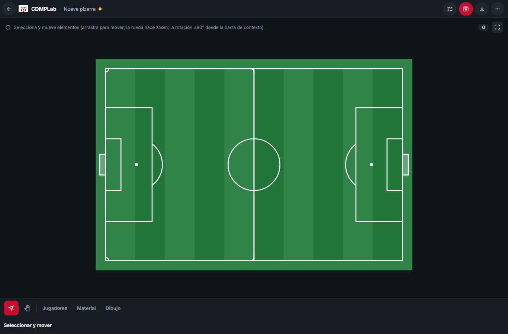
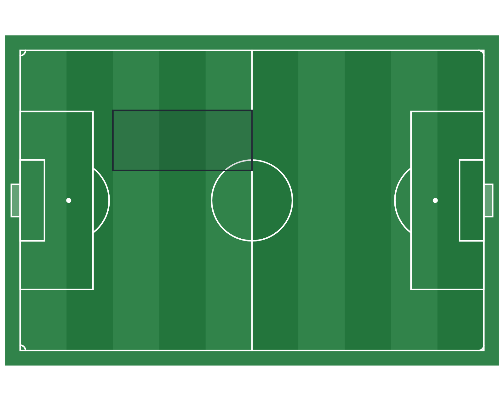

Capturas — features nuevas (dos medios campos, fichas por color, menú ±45°/±90°, trazos discontinuos)

dos-medios-campos-horizontal.png — Dos medios campos (two_halves) en horizontal: dos medios campos juntos, izquierda y derecha, sin líneas dobles gruesas en la unión central.

dos-medios-campos-vertical.png — Dos medios campos (two_halves) en vertical: dos medios campos, arriba y abajo, cada uno con sus áreas, portería, punto, arco y semicírculo central.

fichas-rapidas-por-color.png — Incremento C1: cinco fichas rápidas de jugador GENÉRICO por color (azul, rojo, amarillo, verde, morado); la diferenciación es por color, sin nombre ni playerId.

menu-contextual-45-90.png — Menú contextual (barra) con los giros ±45° y ±90° (Bloque D2): Deshacer/Rehacer, ±45° izq/der, ±90° izq/der, Duplicar y Eliminar.

linea-flecha-discontinuas.png — Trazo discontinuo por herramienta (Bloque E): la Línea discontinua y la Flecha continua coexisten con preferencias independientes.

catalogo-materiales-actual.png — Panel de Material: catálogo agrupado con miniaturas reales (PNG) y variantes de cono. Nomenclatura canónica (Chino, BOSU, Fitball, Maniquí individual, Miniportería, Mancuerna / pesa).

composicion-final-con-objetos.png — Composición final: portería, jugadores propios/rivales, balón, cono, línea y rectángulo sobre el campo.

dos-medios-vs-encajar-todo.png — Comparación entre "Dos medios campos" (two_halves) y "Encajar todo en un medio campo" (fit-half): campos distintos, composición distinta en la primera mitad.

pizarra-final-png.png — PNG exportado de la pizarra (composición con varios tipos de objeto).